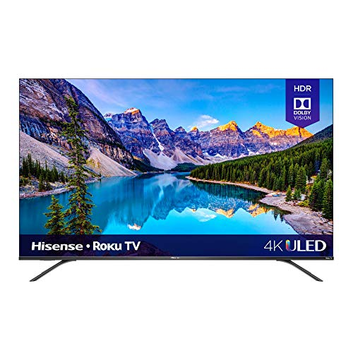
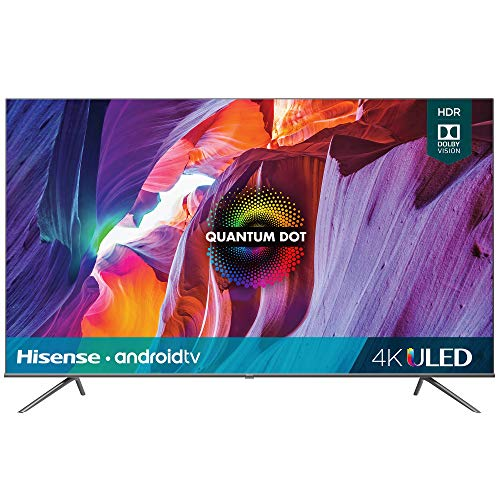
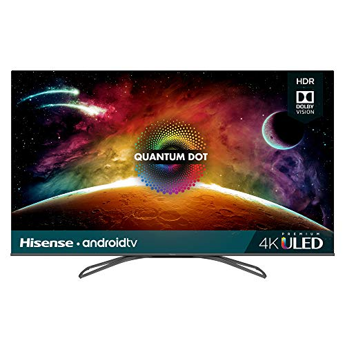
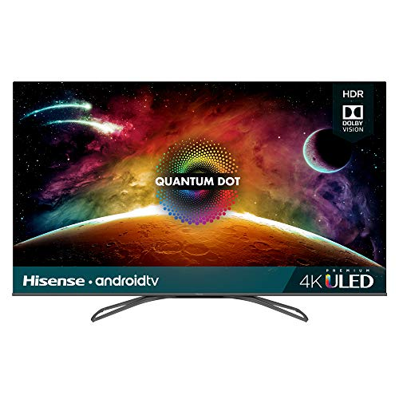

Hisense 65-Inch 4K Smart LED TV Smart and affordable If you are looking for a large TV with sharp video quality and smart technology, this Hisense model is the one to choose. You will get ample screen space to enjoy the UHD images, plus smart technology with WiFi for streaming and enjoying your favorite apps. These features come a price point that is surprisingly low for a TV in this class What to look for in a Hisense TVPicture Quality- Hisense offers a variety of screen resolutions from 720p and 1080p full HD to 4K UHD. If you plan on streaming 4K content and purchasing a 4K UHD DVD player in the future, a UHD screen is the best choice to take full advantage of the picture quality. If you just want to have a great picture for streaming HD content, a 720p or 1080p TV is a great option.Smart Features- If you're planning to cut the cord with your cable or satellite provider, you may want to consider a TV with native smart features. A TV that has built-in Wi-Fi and a streaming platform integrated into the unit means you can have access to thousands of apps without having to buy and maintain any extra equipment.Voice Controls- For anyone who relies on their Amazon Alexa and Google Assistant enabled devices to maintain their smart home network, a TV with integrated voice controls would be a great addition to the home. Hisense televisions have support for both Alexa and Google Assistant voice commands for hands-free controls
Product Info
Brand Name:Hisense Ultra HD Smart
Series :The screen has 132 local dimming zones to produce deep, inky blacks for enhanced contrast.
Connections:Wireless, Ethernet, Bluetooth
Color:Quantum Dot Wide Color Gamut:
stand type:bending plate
 
 

BUY NOW
TABLE
| Quantity | Dimension | Weight | Connectivity | Price | Barcode |
| 4 | Product size1,225x174x48,9 | 120 inches | Wi-Fi,bluetooth,phone connectivity | $2,549 |